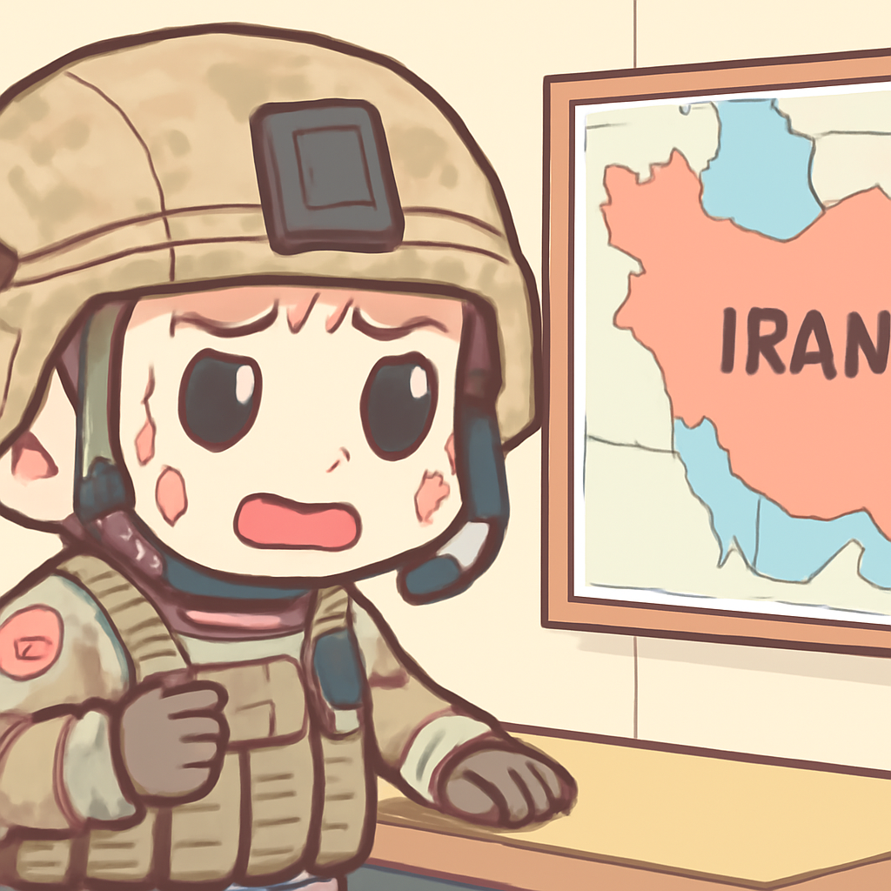

其一 · 美國華府 · 特朗普宣布與哈馬斯達成和平協議
特朗普宣佈與哈馬斯達成和平協議，尚待以色列回應。
在美國華府，特朗普近日宣佈與哈馬斯達成一項和平協議，然而以色列和哈馬斯至今尚未對此發表評論。這項協議若能實現，可能會對中東局勢產生重大影響，大家都在期待會不會是又一個「和平的開始」還是「和平的笑話」。
🔗 原始新聞 ↗
2026-07-31 · 以古觀今，以笑抗愁
特朗普宣佈與哈馬斯達成和平協議，尚待以色列回應。
在美國華府，特朗普近日宣佈與哈馬斯達成一項和平協議，然而以色列和哈馬斯至今尚未對此發表評論。這項協議若能實現，可能會對中東局勢產生重大影響，大家都在期待會不會是又一個「和平的開始」還是「和平的笑話」。
🔗 原始新聞 ↗
歐洲足聯表示若FIFA計畫通過，將抵制未來世界杯。
在倫敦，歐洲足聯（UEFA）宣布若FIFA及其總裁贊同相關投資計畫，將抵制未來的世界杯。這一決定來自其55個會員協會的投票，顯示出歐洲對於賽事商業化的反感。看來世界杯即將變成一場「有錢人的派對」，而我們只能在旁邊吃爆米花。
🔗 原始新聞 ↗
美國在對伊朗的攻擊後展開猛烈空襲，雙方衝突升級。

在德黑蘭，美國因伊朗對美軍部隊的襲擊而展開了猛烈的空襲。這場衝突的重燃讓人擔心局勢將再度惡化，兩國的緊張關係如同火上加油。希望在這場「火拼」中，別讓平民又一次成為最無辜的受害者。
🔗 原始新聞 ↗
熊本地震造成死亡人數上升，救援工作持續進行。
在日本熊本，最近的地震已經造成34人死亡，救援人員仍在努力尋找可能被困的人。這場災難不僅考驗了當地的應急反應，也讓人更加認識到自然災害的無情。願所有受災者都能早日重建家園。
🔗 原始新聞 ↗
希臘野火肆虐，三名消防員不幸遇難。
在雅典，持續肆虐的野火已經導致三名消防員遇難，甚至在法國和西班牙也面臨類似的火災危機。這場火災不僅威脅到人命，也讓整個地區的環境受到重創。希望能早日找到控制火勢的方法，讓消防員們能平安歸來。
🔗 原始新聞 ↗